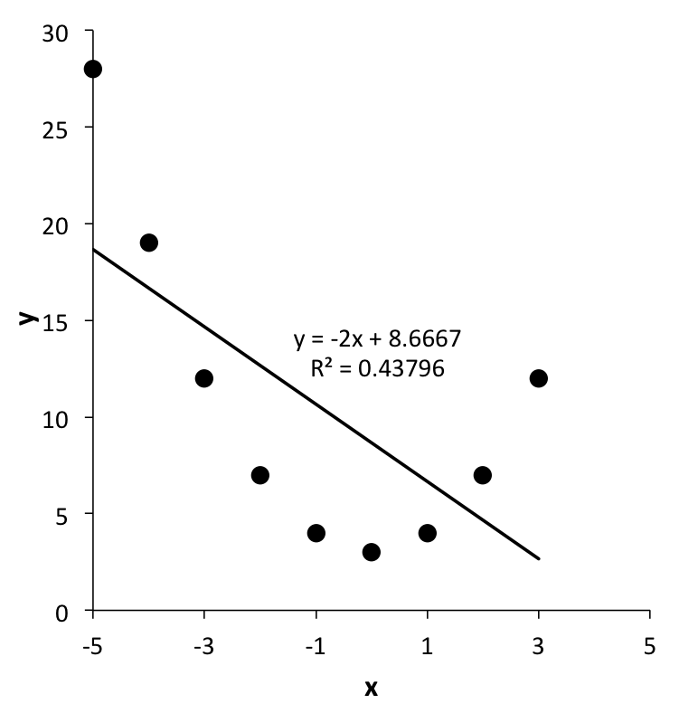
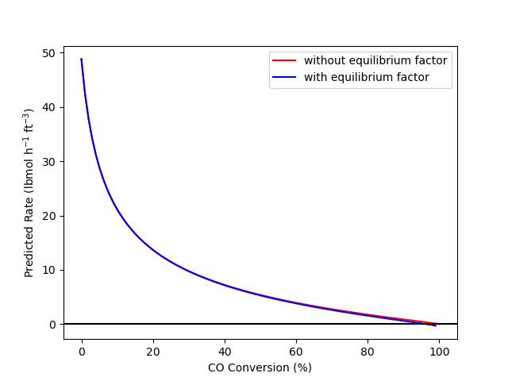
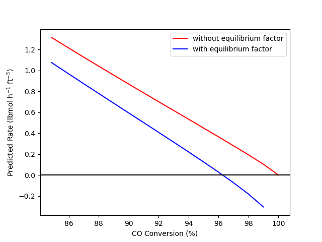
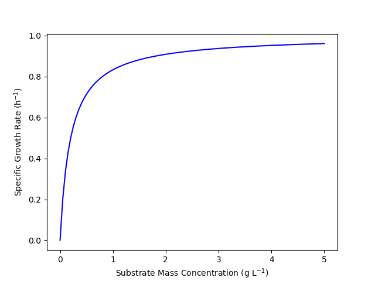
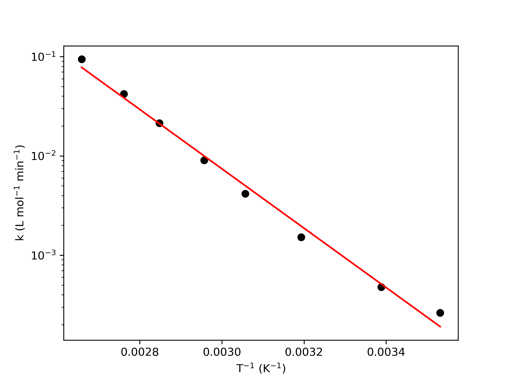

| i (Expt. Number) | T (°C) | k (L mol-1 min-1) |
|---|---|---|
| 1 | 10 | 2.63 x 10-4 |
| 2 | 22 | 4.78 x 10-4 |
| 3 | 40 | 1.52 x 10-3 |
| 4 | 54 | 4.18 x 10-3 |
| 5 | 65 | 9.07 x 10-3 |
| 6 | 78 | 2.14 x 10-2 |
| 7 | 89 | 4.2 x 10-2 |
| 8 | 103 | 9.42 x 10-2 |
4 Reaction Rates and Rate Expressions
In Part 1 of Reaction Engineering Basics, properties of chemical reactions were reviewed, and reaction progress variables were defined for quantifying the net number of times a reaction had taken place. This chapter extends those concepts by defining the net reaction rate which is a measure of the time required for a reaction to take place. The reaction rate varies as the state of the system changes. This chapter introduces rate expressions which are mathematical functions that give the reaction rate as a function of the instantaneous temperature, pressure and composition of the system.
4.1 Reaction Rates
The true extent of reaction \(j\), \(\Xi_j\), was defined in Chapter 3 to be the net number of times molecular reaction event \(j\) has occurred, expressed in moles. Consider a volume, \(V\), where the temperature, pressure and composition are uniform and reaction \(j\) is taking place. The instantaneous net rate of reaction \(j\), \(r_j\), is then defined as shown in Equation 4.1. When this definition is used, the rate is said to be normalized per unit volume, and the rate is an intensive quantity.
\[ r_j = \frac{1}{V} \frac{d\Xi_j}{dt} \tag{4.1}\]
Rates can be normalized using quantities other than the volume. Generally, the best normalization factor is the size of the location where the reaction takes place. The systems considered so far in Reaction Engineering Basics, were a single phase fluid. For a single phase fluid, the reaction takes place everywhere in the fluid, so the volume is a good normalization factor. When two phases are present, it may be more complicated. For example, the reaction may only take place at the interface between the two phases, and in this case the interfacial area would be the best normalization factor.
In practice, normalization factors are sometimes chosen for convenience. As an example, the mass of a solid catalyst is often used to normalize heterogeneous catalytic reaction rates. A heterogeneous catalyst is a material that exists as a separate phase in contact with the fluid containing the reagents. It causes the rate of reaction to increase, but it is neither a reactant nor a product of the reaction. The reaction does not take place within the solid mass of the catalyst, but instead on its surface. Nonetheless, it is quite common to normalize heterogeneous catalytic reaction rates using the mass of the catalyst.
It is straightforward to renormalize a rate. All that is needed is the ratio of the factor used to normalize the rate to the desired normalization factor. In the example of a catalytic reaction normalized per catalyst mass, knowing the ratio of the mass of catalyst to the surface area of the catalyst, the rate per catalyst mass multiplied by that ratio would equal the rate per catalyst area. Example 4.5.1 illustrates the renormalization of a reaction rate.
The rate as defined in Equation 4.1 is based upon the reaction expression. The net rate of generation of reagent \(i\) due to the occurrence of reaction \(j\) is determined by the stoichiometry as shown in Equation 4.2. Recalling the sign convention for stoichiometric coefficients, if \(i\) is a reactant, its stoichiometric coefficient, and hence its rate of generation, will be negative. This make sense since a reactant is consumed by the reaction. A negative rate of generation is the same as a positive rate of consumption. If multiple reactions are taking place, the overall net rate of generation of \(i\) is the sum of its net rate of generation in each reaction. Example 4.5.1 illustrates conversion of a species generation rate to a general reaction rate.
\[ r_{i,j} = \nu_{i,j} r_j \tag{4.2}\]
Equation 4.1 and Equation 4.2 are expressions for the net rate of reaction \(j\) and the net rate of generation of \(i\) via reaction \(j\). It is also possible to define two absolute rates, one in the forward direction and the other in the reverse direction. That is, the change in the absolute number of times reactant molecules are converted to products due to the occurrence of molecular reaction event \(j\) defines the absolute rate of reaction \(j\) in the forward direction, \(r_{j,f}\). The change in the absolute number of times product molecules are converted to reactant molecules due to the occurrence of reaction \(j\) in the reverse direction similarly defines the absolute rate of reaction \(j\) in the reverse direction, \(r_{j,r}\). The net rate of reaction defined in Equation 4.1 is then simply the difference between the absolute rates as shown in Equation 4.3.
\[ r_j = r_{j,f} - r_{j,r} \tag{4.3}\]
4.2 Instantaneous Yield and Selectivity
Chapter 3 introduced the overall yield and overall selectivity as measures of reaction progress. In that chapter it was noted that an instantaneous yield and an instantaneous selectivity can also be defined. Now, having defined species generation rates, that is possible. The instantaneous yield of product D from reactant \(i\) is simply the ratio of the rate of generation of D divided by the rate of consumption of \(i\), Equation 4.4. The negative sign in Equation 4.4 is needed to convert the rate of generation of \(i\) in the denominator to a rate of consumption. The rate of any reaction is expected to vary as the temperature, pressure and composition vary. That is the reason for referring to \(Y_{D/i,inst}\) as the instantaneous yield. It will change as the composition changes.
\[ Y_{D/i,inst} = - \frac{\displaystyle \sum _j r_{D,j}}{\displaystyle \sum _j r_{i,j}} \tag{4.4}\]
In an analogous manner, the instantaneous selectivity for the product, D, relative to the product, U, can be defined as shown in Equation 4.5. Selectivities can involve groups of products, e. g. selectivity for olefins relative to parafins. In that case, the numerator in Equation 4.5 would need an additional sum over all products, D, that were olefins and the denominator would need an additional sum over all products, U, that were parafins.
\[ S_{D/U,inst} = \frac{\displaystyle \sum _j r_{D,j}}{\displaystyle \sum _j r_{U,j}} \tag{4.5}\]
4.3 Cell Growth Rates
Many important chemicals are produced biologically. As a living cell grows, it takes in nutrients and excretes wastes until it eventually divides into two cells. The waste produced during cell growth can be valuable chemicals such as penicillin. It is sometimes possible to treat the cell growth process as if it is a chemical reaction. When this is possible, the methods of chemical reaction engineering can be applied to design and operate the process.
Different nomenclature is used to describe cell growth than is used to describe chemical reactions. The reactors are often referred to as chemostats or fermentors. The nutrients being fed to the system are often called substrates and not reactants.
Another difference between cell growth and chemical reactions is that there isn’t any stoichiometry associated with cell growth. In order to treat cell growth like a chemical reaction, it is necessary to use an average ratio of nutrient consumption to cell mass increase. This effective stoichiometry is typically expressed in terms of masses. Similarly, cell growth rates are typically defined in terms of cell mass as shown in Equation 4.6. \[ r_g = \frac{1}{V}\lim _{\Delta t \to 0} \frac {\Delta m_{cells}}{\Delta t} = \frac{1}{V} \frac{dm_{cells}}{dt} \tag{4.6}\]
The specific cell growth rate, \(\mu\), is a related growth rate. It is defined as shown in Equation 4.7. In Equation 4.7, \(C_{cells}\) is the mass concentration of cells.
\[ \mu = \frac{r_g}{C_{cells}} \tag{4.7}\]
4.4 Rate Expressions
Reaction rates change as the temperature, pressure and composition of the system change. A rate expression is an equation for calculating the net rate of a reaction as a function of those variables. The form of an equilibrium expression is known from the stoichiometric coefficients in the reaction expression (Equation C.8). That is not necessarily true of the rate expression for a non-elementary reaction. The form of the rate expression for a non-elementary reaction is not known, a priori.
All rate expressions must satisfy two requirements. First, a rate expression must be single-valued. At a points in space with a given temperature, pressure and composition, the rate will always be the same. If the rate expression had two (non-imaginary) roots at those conditions, one would not know which was the correct rate. Hence rate expressions must be single-valued.
The second requirement relates to equilibrium. When a temperature, pressure and composition that correspond to thermodynamic equilibrium are substituted into a rate expression, it must evaluate to zero. While the absolute forward and absolute reverse rates are non-zero at equilibrium, the net rate is always equal to zero. For this reason, it is not uncommon for the equilibrium constant to be present in one of the terms in a rate expression.
4.4.1 Validation of Rate Expressions
Experimental kinetics data are needed in order to establish a rate expression for a given reaction. The generation of experimental kinetics data is discussed in Chapter 18. For present purposes, experimental kinetics data may be taken to consist of many data points. Each kinetics data point includes some measure of the composition (typically concentrations or partial pressures of all reagents), the temperature, the pressure, and the reaction rate at those conditions.
The approach to establishing a rate expression for a reaction begins by postulating the mathematical form of the rate expression. For elementary reactions, the mathematical form may be postulated on the basis of theory. For non-elementary reactions, one approach involves simply picking a mathematical form that is convenient to work with. Of course, the resulting rate expression still must accurately predict the reaction rate as a function of temperature, pressure and composition. It also must satisfy the two requirements of being single-valued and of evaluating to zero at equilibrium. When initially chosen, the mathematical form typically contains one or more unknown constants. These constants can be referred to as kinetics parameters, and their values can be chosen to make the rate expression as accurate as possible while still satisfying the rate expression requirements.
Once a mathematical form has been postulated, the next step is called parameter estimation. Parameter estimation is described in Appendix F.6 and is demonstrated in Chapters 19, 20, and 21. It uses statistical methods to find the values of each unknown kinetics parameter that appears in the rate expression. The experimental kinetics data are used to find these values. The parameters are chosen so that the rate predicted by the rate expression for each experimental data point is as close as possible to the experimentally measured rate for that data point. Parameter estimation is sometimes referred to as fitting a rate expression to the experimental data.
In addition to the best values of the kinetics parameters, parameter estimation generates additional information. Some measure of the uncertainty in the values of the kinetics parameters is typically produced. Common examples are an estimate of the standard error or the 95% confidence interval for each parameter. Other statistical measures of how accurately the model represents the data (or how well the model “fits” the data) are also generated. Well-known examples include the correlation coefficient, \(R\), and the coefficient of determination, \(R^2\). Example 4.5.4 illustrates parameter estimation using experimental data.
The next step in the process of establishing a rate expression for a reaction is assessing the accuracy of the rate expression. This assessment makes use of the statistical measures generated during parameter estimation. It may also include additional graphical methods. It should be noted that while parameter estimation yields the “best” values of the parameters, that does not mean that the underlying model is accurate. As an example, when \(y\) vs. \(x\) data are plotted, the plotted points might resemble a parabola. Parameter estimation can be used to find the best slope, \(m\), and intercept, \(b\), of a straight line model, \(y = mx + b\), for those data, but the resulting straight line still would not be accurate as seen in Figure 4.1.

Accuracy assessment results in one of three decisions. If the rate expression is deemed to be sufficiently accurate for its intended purpose, the rate expression is accepted. Having been evaluated against experimental data, it can be said that the rate expression has been validated. This is always a judgement call, and as noted, it may be affected by the intended use of the rate expression. When a rate expression will be used to design a reactor for a multi-million dollar process, much higher accuracy may be required than if the rate expression is going to be used to size a small laboratory reactor.
The second possible decision is to generate additional data and then repeat the parameter estimation. This might happen if the accuracy is reasonable, but the uncertainty in the estimated value of one or more parameters is large. Experiments would be selected to try to reduce the uncertainty in those parameter values.
The third possible decision would be to reject the postulated mathematical form for the rate expression. A different mathematical form would then be postulated and the whole process would be repeated. Often, the inaccuracy observed with rejected model will suggest modifications to be used in the next postulated model. It is possible that a number of postulated models will be rejected before an acceptably accurate rate expression is found.
4.4.2 Rate Coefficients
Every rate expression contains a quantity known as the rate coefficient. A lower case \(k\) is usually used to represent a rate coefficient. Additional subscripts may be added to indicate the reaction and other specifics about the rate coefficient. Rate coefficients depend upon temperature. By far the most common equation for modeling the temperature dependence of a rate coefficient is the Arrhenius expression, Equation 4.8.
\[ k_j = k_{0,j} \exp{\left( \frac{-E_j}{RT} \right)} \tag{4.8}\]
When using Equation 4.8, the temperature must be expressed in absolute units, either K or °R. The constants, \(k_{0,j}\) and \(E_j\) are kinetics parameters known as the pre-exponential factor and the activation energy, respectively. It should be noted that the activation energy, \(E_j\), is a positive quantity.
As with other kinetics parameters, the values of \(k_{0,j}\) and \(E_j\) are determined during the parameter estimation stage of the validation of the rate expression. The most common way of doing this uses linear least squares. Taking the logarithm of each side of the Arrhenius expression yields Equation 4.9. Letting \(y = \ln{k_j}\) and \(x = \left( \frac{-1}{RT} \right)\), it can be seen that Equation 4.9 is a linear equation with a slope equal to \(E_j\) and an intercept equal to \(\ln{k_{0,j}}\). As such, linear least squares can be used to estimate \(E_j\) and \(k_{0,j}\) (see Example 4.5.4).
\[ \ln{k_j} = E_j \left( \frac{-1}{RT} \right) + \ln{k_{0,j}} \tag{4.9}\]
In addition to the estimated values of \(E_j\) and \(k_{0,j}\), linear least squares can be used to find the 95% confidence intervals for \(E_j\) and \(k_{0,j}\) and the coefficient of determinations, \(R^2\). Typical nomenclature for reporting an estimated parameter and its 95% confidence interval is provided in Appendix B. As an example, \(E\) = 20.0, 95% CI [19.2, 21.0] kJ mol-1 means that the best estimate for \(E\) is 20.0 kJ mol-1 with a 95% confidence interval between 19.2 and 21.0 kJ mol-1.
Once the values of the parameters have been estimated, a so-called model plot can be prepared. In a model plot, the experimental \(x\) vs. \(y_\text{expt}\) data are plotted as points, and on the same axes, the model-predicted \(x\) vs. \(y_\text{pred}\) data are plotted as a line. The following criteria will be satisfied if the Arrhenius expression accurately predicts the experimental results.
- In the model plot, the experimental data points will scatter randomly about the line for the predicted results. The deviations from the line will be small and there will not be any systematic deviations about the line.
- The coefficient of determination, \(R^2\), will be close to 1.0
- The uncertainty in each parameter will be small relative to its value. (But see Chapter 18.5.)
The estimation of Arrhenius parameters and assessment of the resulting expression are illustrated in Example 4.5.4.
4.4.3 Empirical Rate Expressions
In Reaction Engineering Basics, the term empirical rate expression is used to refer to an experimentally validated rate expression in which the mathematical form was chosen for convenience. Power-law rate expressions are very common empirical rate expressions. In a power-law rate expression, the rate is proposed to depend upon the concentration or partial pressure (for gases) of each reagent in the system raised to an unknown power as shown in Equation 4.10 and Equation 4.11.
\[ r_j = k_j \prod_i C_i^{\alpha_i} \tag{4.10}\]
\[ r_j = k_j \prod_i P_i^{\alpha_i} \tag{4.11}\]
In power-law rate expressions, the exponents, \(\alpha_i\), are unknown kinetics parameters. Their values are found during the parameter estimation stage of validating the rate expression. They do not necessarily equal the stoichiometric coefficient of \(i\) in reaction \(j\), nor are they necessarily integers or simple fractions. The rate may not depend on the amount of every species in the system. That is, for some reagents, \(\alpha_i\) may be equal to zero. The sum of all of the exponents is known as the reaction order. The value of the exponent, \(\alpha_i\) is the reaction order in \(i\).
The \(k_j\) in Equation 4.10 and Equation 4.11 represents the rate coefficient for reaction \(j\). Rate coefficients are not necessarily the only source of temperature dependence in rate expressions. It was noted earlier in this chapter that it is not uncommon for equilibrium constants to appear in rate expressions. Despite being called an equilibrium constant, they actually vary with temperature. If the standard entropy and standard enthalpy of reaction \(j\) are assumed to be constant, the equilibrium constant varies with temperature as shown in Equation 4.12. Equation 4.12 is similar to the Arrhenius expression for the temperature dependence of rate coefficients. One difference is that the heat of reaction, \(\Delta H_j^0\) can be either positive or negative, but the activation energy, \(E_j\), is always positive.
\[ K_j = \exp{\frac{\Delta S_j^0}{R}} \exp{\frac{-\Delta H_j^0}{RT}} = K_{0,j}\exp{\frac{-\Delta H_j^0}{RT}} \tag{4.12}\]
The net rate of a reversible reaction will go to zero while reactants are still remaining. It is important to check that postulated rate expressions evaluate to zero at equilibrium. A power-law rate expression will not do so. Any postulated rate expression can be modified so that it does properly evaluate to zero at equilibrium by simply multiplying it by the factor shown in Equation 4.13. That equation assumes that \(K_{j,c}\) is a concentration-based equilibrium constant. An equivalent equation using partial pressures and a partial pressure-based equilibrium constant can be used with ideal gases, Equation 4.14. Notice that within this factor, the exponent for each species’ concentration is its stoichiometric coefficient in reaction \(j\). That is, there are no kinetics parameters in these factors. Example 4.5.2 illustrates the use of Equation 4.14 to force a rate expression to evaluate to zero at thermodynamic equilibrium.
\[ \left\{ 1 - \frac{\displaystyle \prod_i C_i^{\nu _i,j}}{K_{j,c}} \right\} \tag{4.13}\]
\[ \left\{ 1 - \frac{\displaystyle \prod_i P_i^{\nu _i,j}}{K_{j,p}} \right\} \tag{4.14}\]
Power-law rate expressions can sometimes be used for heterogeneous catalytic reactions. Often, however, they do not describe the variation of the rate with sufficient accuracy. An old paper by Yang and Hougen (1950) provides a set of tables that can be used to generate many mathematical functions that can be tested as rate expressions for heterogeneous catalytic reactions.
As previously noted, it is sometimes possible to model processes involving the growth of living cells as if they involved chemical reactions. Rate expressions are needed in order to do so. One common expression for the specific cell growth rate is the Monod equation, Equation 4.15. In that expression \(\mu_{max}\) and \(K_s\) are kinetics parameters whose values are determined using parameter estimation methods. The substrate concentration, \(C_S\), in Equation 4.15 is a mass concentration and not a molar concentration. Example 4.5.3 considers limiting cases of the Monod equation for cell growth.
\[ \mu = \frac{\mu_{max}C_S}{K_s + C_S} \tag{4.15}\]
4.4.4 Theoretical Rate Expressions
It was noted above that the mathematical form for a non-elementary reaction is not known a priori. The reason for this is that at the molecular level, the non-elementary reaction doesn’t occur as a single event. All breaking and forming of bonds does not occur simultaneously, and as a consequence, intermediate species are created. In other words, a non-elementary reaction is actually a group of reactions that is treated as if it were a single reaction. As such, it does not lend itself to a general theoretical treatment. In contrast, an elementary reaction is a single molecular event where all breaking and forming of bonds is simultaneous.
Being a single molecular event, elementary reactions can be considered from a theoretical perspective. The theory can then be used to predict the mathematical form of rate expressions for elementary reactions. Two such theories are described in Appendices D.1 and D.2. Collision theory is based upon the kinetic theory of gases. It assumes that molecular velocities obey a Maxwell-Boltzmann distribution, and that when molecules with sufficient kinetic energy collide, they react. (See Appendix D.1 for a more complete description of the theory and a derivation of the associated reaction rate expression.) Transition state theory assumes that the reactants in a system are in a kind of thermodynamic equilibrium with activated complexes that are forming products. It uses statistical thermodynamics to determine the number of such complexes and the frequency at which they decompose. The absolute rate in the forward direction is then equal to the product of those two quantities. (See Appendix D.2 for a more complete description of the theory and a derivation of the associated reaction rate expression.)
According to either theory, the net rate of elementary reaction \(j\) can be written as shown in Equation 4.16, but they predict different dependence of the pre-exponential factor, \(k_{0,j}\) upon temperature. (Recall that the Arrhenius expression, Equation 4.8, predicts that the pre-exponential factor is constant.) Generally, the variation of \(k_{0,j}\) with temperature is very small compared to the variation of the exponential term, \(\exp{\left(\frac{-E_{j}}{RT}\right)}\). As a result, an accurate rate expression usually results if \(k_{0,j}\) and \(E_j\) are taken to be constant kinetics parameters.
\[ \begin{align} r_j &= k_{0,j}\exp{\left(\frac{-E_j}{RT}\right)} \left(\prod_i C_i^{-\nu_{i,j}}\right) \\ &- \frac{k_{0,j}\exp{\left(\frac{-E_j}{RT}\right)}}{K_{j,eq_c}} \left(\prod_{i^\prime} C_{i^\prime}^{\nu_{i^\prime,j}}\right) \end{align} \tag{4.16}\]
For an ideal gas system, the concentration of reagent \(i\) is equal to its partial pressure divided by \(RT\). Making that substiution for each concentration in Equation 4.16 yields a rate expression in terms of partial pressures. The variation of the \(RT\) terms that this introduces is again small compared to the \(\exp{\left(\frac{-E_{j}}{RT}\right)}\) term. As a result, the \(RT\) terms can be incorporated into the pre-exponential factor and the pre-exponential factor again can be taken to be a constant kinetics parameter. This results in Equation 4.17.
\[ \begin{align} r_j &= k_{0,j}\exp{\left(\frac{-E_j}{RT}\right)} \left(\prod_i P_i^{-\nu_{i,j}}\right) \\ &- \frac{k_{0,j}\exp{\left(\frac{-E_j}{RT}\right)}}{K_{j,eq_p}} \left(\prod_{i^\prime} P_{i^\prime}^{\nu_{i^\prime,j}}\right) \end{align} \tag{4.17}\]
Note
Recall from Section 2.1 that a reaction like Equation 4.18 is called a unimolecular reaction. Unimolecular reactions are not elementary reactions (Lindemann et al. (1922)). Nonetheless, the rate expression resulting from application of Equation 4.16 or Equation 4.17 is generally found to be valid unless the pressure is very low. In Reaction Engineering Basics, rate expressions for unimolecular reactions will be assumed to have the mathematical form predicted by Equation 4.16 or Equation 4.17. As such, the mathematical form of the rate expression for Equation 4.18 is as shown in Equation 4.19 or Equation 4.20.
\[ A_2 \rightleftarrows 2 A \tag{4.18}\]
\[ r = k_0\exp{\left(\frac{-E}{RT}\right)}C_{A_2} - \frac{k_0\exp{\left(\frac{-E}{RT}\right)}}{K_{eq_c}} C_A^2 \tag{4.19}\]
\[ r = k_0\exp{\left(\frac{-E}{RT}\right)}P_{A_2} - \frac{k_0\exp{\left(\frac{-E}{RT}\right)}}{K_{eq_p}} P_A^2 \tag{4.20}\]
It is not possible to discern whether a reaction is elementary by simply looking at the reaction expression. Unless one knows from other information that a reaction is elementary, the rate expressions in Equation 4.16 and Equation 4.17 should be treated as postulated rate expressions. The values of \(k_{0,j}\) and \(E_j\) should be determined by statistical parameter estimation using experimental kinetics data, after which the accuracy of the resulting rate expression should be assessed.
Importantly, the equilibrium constant in Equation 4.16 and Equation 4.17 is not a kinetics parameter and its value should not be determined by parameter estimation methods. The one exception to this, discussed in Chapter 5, would be if the equilibrium constant for reaction \(j\) and its temperature dependence (or equivalently, the heat, free energy and entropy of reaction \(j\)) are not available and can not easily be measured. In that case, the equilibrium constant can be written as in Equation 4.12 with \(K_{0,j}\) and \(\Delta H_j^0\) treated as kinetics parameters.
4.4.5 Mechanistic Rate Expressions
There is another way to postulate the mathematical form of the rate expression for an non-elementary reaction. It stems from knowing that a non-elementary reaction actually represents a group of molecular level reactions. It involves guessing the specific molecular level reactions that are involved, and then combining the rate expressions for those molecular level reactions. This approach for postulating the rate expression for a non-elementary reaction is the topic of Chapter 5.
4.5 Examples
4.5.1 Rate Renormalization and Conversion between Reaction Rate and Species Generation Rate
The synthesis of ammonia, reaction (1), is one of the highest production chemical processes in the world. (One reason for this is that ammonia is used to make fertilizer.) It is a heterogeneous catalytic reaction. The ammonia synthesis catalyst takes the form of pellets that pack into the the reactor with an apparent density of 155 lbm ft-3. Rase (1977) provides the expression in equation (2) for the rate of generation of ammonia via reaction (1). In that expression, \(E_1\) is the activation energy, \(K_{1,eq}\) is the equilibrium constant and \(a_i\) represents the thermodynamic activity of reagent \(i\).
\[ 3 H_2 + N_2 \rightleftarrows 2 NH_3 \tag{1} \]
\[ \begin{align} r_{NH_3,1} &= 1.54 \times 10^{15} \exp{\left( \frac{-E_1}{RT} \right)} \\ &\times \left[ K_{1,eq}^2\left( \frac{a_{N_2}a_{H_2}^{1.5}}{a_{NH_3}} \right) - \left( \frac{a_{NH_3}}{a_{H_2}^{1.5}} \right) \right] \frac{\text{kmol NH}_3}{\text{m}_{\text{bed}}^3 \text{h}} \end{align} \tag{2} \]
Write an expression for the general rate of reaction (1), \(r_1\), that is normalized per lbm of catalyst.
Click Here to See What an Expert Might be Thinking at this Point
I know that the units of a reaction rate are always moles per time per normalization factor. For a rate expression, that means that if you multiply the units of the pre-exponential factor by the units of the composition variables in the rate expression, you should end up with units of moles per time per normalization factor. Looking at equation (2) I see that the pre-exponential factor has units of moles (actually kmol NH3) per time per volume of the bed (in cubic meters). The equilibrium constant and the thermodynamic activities do not have units, so the rate also has units of moles per time per volume of the bed.
So, from the units on the pre-exponential factor in equation (2), I can see that the rate normalization factor is the volume of the catalyst bed. The problem asks for a rate normalized per mass of catalyst, so solving this problem will involve renormalizaton of the rate. To do that, I need to know the ratio of the old normalization factor to the new normalization factor. Here that ratio is given in the problem statement. It is the reciprocal of the apparent density, so dividing equation (2) by the apparent density will renormalize the rate.
I can also see, both from the units and from the variable used to represent the rate in equation (2), that the rate expression yields a species generation rate, specifically the rate of generation of ammonia. The problem asks for an expression for the general reaction rate (not the rate of species generation), so the solution will also involve converting from a species generation rate to a reacton rate.
4.5.1.1 Assignment Summary
Reaction:
\[ 3 H_2 + N_2 \rightleftarrows 2 NH_3 \tag{1} \]
Rate Expression:
\[ \begin{align} r_{NH_3,1} &= 1.54 \times 10^{15} \exp{\left( \frac{-E_1}{RT} \right)} \\ &\times \left[ K_{1,eq}^2\left( \frac{a_{N_2}a_{H_2}^{1.5}}{a_{NH_3}} \right) - \left( \frac{a_{NH_3}}{a_{H_2}^{1.5}} \right) \right] \frac{\text{kmol NH}_3}{\text{m}_{\text{bed}}^3 \text{h}} \end{align} \tag{2} \]
Given and Known Constants:
\(\rho _{bed}\) = 155 lbm ft-3.
4.5.1.2 Mathematical Formulation of the Analysis
Equation 4.2 can be used to convert the species generation rate to the general reaction rate. Applying that equation to the present problem yields equation (3).
\[ r_{i,j} = \nu_{i,j} r_j \quad \Rightarrow \quad r_j = \frac{r_{i,j}}{\nu_{i,j}} \]
\[ r_1 = \frac{r_{NH_3,1}}{\nu _{NH_3,1}} = \frac{r_{NH_3,1}}{2} \tag{3} \]
The rate expression in equation (2) is normalized using the volume of the catalyst bed. Upon substitution in equation (3), the resulting reaction rate also will be normalized by the volume of the catalyst bed. The apparent bed density is the mass of catalyst divided by the volume of the bed, so the rate per bed volume can be converted to the rate per catalyst mass simply by dividing by the apparent bed density, equation (4), where \(r_1^\prime\) is the renormalized rate expression.
\[ r_1^\prime = r_1 \frac{V_{cat}}{m_{cat}} = \frac{r_1}{\rho _{bed}} \tag{4} \]
4.5.1.3 Results, Analysis and Discussion
Performing the calculations as described yields the rate expression shown in equation (5).
\[ \begin{align} r_1 &= 1.76 \times 10^{14} \exp{\left( \frac{-E_1}{RT} \right)} \\ &\times \left[ K_{1,eq}^2\left( \frac{a_{N_2}a_{H_2}^{1.5}}{a_{NH_3}} \right) - \left( \frac{a_{NH_3}}{a_{H_2}^{1.5}} \right) \right] \frac{\text{kmol}}{\text{lb}_{\text{m}} \text{h}} \end{align} \tag{5} \]
Notice that the value of \(k_0\) changed from \(1.54 \times 10^{15}\) to \(1.76 \times 10^{14}\) and the units changed from \(\frac{\text{kmol NH}_3}{\text{m}_{\text{bed}}^3 \text{h}}\) to \(\frac{\text{kmol}}{\text{lb}_{\text{m}} \text{h}}\). On might reasonably ask “if it isn’t kmol of NH3, then kmol of what?” The answer is found in Equation 4.1. It is kmol of extent of reaction.
4.5.2 Forcing a Power-law Rate Expression to Exhibit Proper Behavior at Equilibrium
The water-gas shift, reaction (1), is used commercially to remove CO impurities from hydrogen. Suppose the rate expression shown in equation (2) was validated using experimental data that were far from thermodynamic equilibrium. At 675 K, the rate coefficient, \(k_1\), was found to equal to 3.37 lbmol h-1 ft-3 atm-0.55. In equation (3), that power-law rate expression has been multiplied by a factor that will force it to evaluate to zero at equilibrium. At 675 K, the equilibrium constant, \(K_1\) is equal to 12.0.
If a system initially containing 75% H2O, 24% CO, and 1% CO2 at 10 atm and 675 K reacts isothermally and isobarically, the equilibrium conversion of CO will equal 96%. The net rate should go to zero at this conversion.
\[ CO + H_2O \rightleftarrows CO_2 + H_2 \tag{1} \]
\[ r_1 = k_1 P_{CO}^{0.9} P_{H_2O}^{0.25} P_{CO_2}^{-0.6} \tag{2} \]
\[ r_1 = k_1 P_{CO}^{0.9} P_{H_2O}^{0.25} P_{CO_2}^{-0.6} \left\{ 1 - \frac{P_{CO_2} P_{H_2}}{K_1 P_{CO} P_{H_2O}} \right\} \tag{3} \]
For the system described above, make a plot of the net rate of reaction (1) predicted by equations (2) and (3) at CO conversions between 0 and 100%. Then make a second plot at conversions between 85 and 100%. Comment upon the results.
Click Here to See What an Expert Might be Thinking at this Point
I am asked to plot the rates predicted by equations (2) and (3) as a function of the CO conversion, given an initial composition, temperature, and pressure. Looking at the equations, I can see that I will need the partial pressures of the reagents to calculate the rate. I know the initial composition and I can choose the conversions to be plotted, so the first part of this problem is basically a reaction progress problem, similar to those presented in Chapter 3.
None of the quantities that are given are extensive, so I may choose a basis. The temperature and pressure are given, so if I choose a volume as the basis for my calculations, I can use the ideal gas law to calculate the initial molar amounts.
I’ll begin by summarizing the assignment.
4.5.2.1 Assignment Summary
Reaction:
\[ CO + H_2O \rightleftarrows CO_2 + H_2 \tag{1} \]
Rate Expressions:
\[ r_1 = k_1 P_{CO}^{0.9} P_{H_2O}^{0.25} P_{CO_2}^{-0.6} \tag{2} \]
\[ r_1 = k_1 P_{CO}^{0.9} P_{H_2O}^{0.25} P_{CO_2}^{-0.6} \left\{ 1 - \frac{P_{CO_2} P_{H_2}}{K_1 P_{CO} P_{H_2O}} \right\} \tag{3} \]
Quantities of Interest: \(r_{1,eq_2}\) and \(r_{1,eq_2}\) vs. \(f_{CO}\)
Given and Known Constants: \(k_1\) = 3.37 lbmol h-1 ft-3 atm-0.55, \(K_1\) = 12.0, \(y_{H_2O,0}\) = 0.75, \(y_{CO,0}\) = 0.24, \(y_{CO_2,0}\) = 0.01, \(P\) = 10 atm, \(T\) = 675 K, \(f_{CO,eq}\) = 0.96.
Basis: \(V\) = 1 L.
4.5.2.2 Mathematical Formulation of the Analysis
The initial percentages of CO, H2O, and CO2 sum to 100%, so the initial mole fraction of H2 must equal zero. Using the chosen basis, the initial molar amounts of the reagents can be calculated using the ideal gas law as shown in equations (4) through (7).
\[ n_{CO,0} = \frac{y_{CO,0} PV}{RT} \tag{4} \]
\[ n_{H_2O,0} = \frac{y_{H_2O,0} PV}{RT} \tag{5} \]
\[ n_{CO_2,0} = \frac{y_{CO_2,0} PV}{RT} \tag{6} \]
\[ n_{H_2,0} = \frac{\cancelto{0}{y_{H_2,0}} PV}{RT} = 0 \tag{7} \]
Knowing the initial moles of CO, the final moles of CO at any conversion can be calculated using the definition of conversion, equation (8).
\[ n_{CO} = n_{CO,0}\left(1 - f_{CO}\right) \tag{8} \]
That result, together with the previously determined initial moles of CO allows the calculation of the extent of reaction, equation (9)
\[ n_{CO} = n_{CO,0} - \xi_1 \quad \Rightarrow \quad \xi_1 = n_{CO,0} - n_{CO} \tag{9} \]
The final molar amounts of the other reagents can next be computed using their initial amounts and the extent of reaction, equations (10) through (12).
\[ n_{H_2O} = n_{H_2O,0} - \xi_1 \tag{10} \]
\[ n_{CO_2} = n_{CO_2,0} - \xi_1 \tag{11} \]
\[ n_{H_2} = \cancelto{0}{n_{H_2,0}} + \xi_1 \tag{12} \]
The ideal gas law can then be used to calculate the final partial pressures of the reagents as shown in equations (13) through (16).
\[ P_{CO} = \frac{n_{CO}RT}{V} \tag{13} \]
\[ P_{H_2O} = \frac{n_{H_2O}RT}{V} \tag{14} \]
\[ P_{CO_2} = \frac{n_{CO_2}RT}{V} \tag{15} \]
\[ P_{H_2} = \frac{n_{H_2}RT}{V} \tag{16} \]
At this point the rates predicted by equations (2) and (3) can be calculated.
4.5.2.3 Results, Analysis and Discussion
The calculations were performed as described above. Figure 4.2 shows the rate of reaction (1) predicted by equations (2) and (3) at conversions between 0 and 100%, based upon isothermal, isobaric reaction with an initial mixture of 75% H2O, 24% CO, and 1% CO2 at 10 atm and 675 K. Figure 4.3 shows the same data, but only for conversions between 85 and 100%.


The figures allow two important observations. First, Figure 4.2 shows that adding the term to force proper behavior at equilibrium does not affect the predicted rate at conditions far from equilibrium. Hence, since rate expression (2) was validated and found to be accurate at conditions far from equilibrium, the figure shows that rate expression (3) will be equally accurate at those conditions.
Second, Figure 4.3 shows that when the reaction reaches equilbrium at 96% conversion, rate expression (2) predicts that the rate will equal 0.37 lbmol h-1 ft-3 while rate expression (3) predicts the rate will be zero. The consequences of using rate expression (2), for example to design a reactor where the conversion approaches equilibrium, could be severe. The design calculations would indicate that, for example, 98% conversion could be achieved in the reactor, but of course, if the reactor was built, the conversion would never exceed 96%. If rate expression (3) was used to design a reactor, the calculations would indicate that the largest possible conversion is 96%.
Notes
While Figure 4.3 shows conversions greater than equilibrium, it should be noted that one could not reach the conversions above 96% by reacting the starting mixture at constant \(T\) and \(P\). However, one could make a mixture of the reagents that has the same composition as if the initial mixture had reached a higher conversion. Figure 4.3 shows that if one did this, the reaction of that mixture would be predicted to have a negative rate. That is, the reaction would proceed in the reverse direction, and when it reached a composition equivalent to 96% conversion of the initial mixture in the problem statement, the rate would again go to zero because the system would be at equilibrium.
Also, Figure 4.3 only shows conversions up to 99% for rate expression (3). The reason for this is that rate expression (3) preducts a rate of negative infinity at 100% conversion. At 100% conversion, the partial pressure of CO would equal zero, and since \(P_{CO}\) appears in the denominator in the equilbrium factor, the factor becomes equal to negative infinity. The important point is that if one has a rate expression for the forward rate of a reversible reaction that includes a factor to force proper equilibrium behavior, that rate expression should not be used to predict the rate of the reverse reaction. Instead, a reverse rate expression should be postulated and experimentally validated.
4.5.3 Limiting Cell Growth Rates Predicted by the Monod Equation
The growth rate of a certain microbial cell line is accurately represented by the Monod equation with \(\mu _{max}\) equal to 1 h-1 and \(K_s\) equal to 0.2 g L-1. Plot the specific growth rate vs. the mass concentration of substrate over a sufficiently wide range of concentrations to show all limiting behavior. Describe the asymptotic behavior mathematically and in terms of what is happening physically.
Click Here to See What an Expert Might be Thinking at this Point
The problem statement pretty much tells me what to do. The only thing I don’t know is how large \(C_S\) will need to be in order to see the limiting behavior. I know that zero is the smallest value. I will simply pick a largest value and make the plot. If the plot doesn’t show the limiting behavior, I’ll change the largest value and repeat until the plot is acceptable.
I’ll begin by summarizing the assignment, and noting that it says the rate is given by the Monod equation, I’ll include that equation.
4.5.3.1 Assignment Summary
Rate Expression:
\[ \mu = \frac{\mu_{max}C_S}{K_s + C_S} \tag{1} \]
Quantities of Interest: \(\mu\) vs. \(C_S\)
Given and Known Constants: \(\mu_{max}\) = 1 h-1, \(K_s\) = 0.2 g L-1.
4.5.3.2 Results, Analysis and Discussion
Figure 4.4 shows the specific cell growth rate predicted by the Monod equation as a function of \(C_S\). At very low substrate concentration, the curve is nearly linear. Looking at equation (1) it can be seen that when the substrate concentration is neglibibly small compared to \(K_s\), the Monod equation reduces to equation (2). Equation (2) is a linear equation with the slope equal to \(\frac{\mu_{max}}{K_s}\). Physically this corresponds to a situation where the amount of available nutrient (substrate) is so small that the cells can’t all get enough to grow. Put differently, in this situation the cells are forced to compete with each other for nutrient. When one of the competing cells takes in nutrient, it grows, but the others can’t.
\[ \mu = \frac{\mu_{max}C_S}{K_s + \cancelto{0}{C_S}} = \frac{\mu_{max}}{K_s}C_S \tag{2} \]

As the substrate concentration becomes very large, Figure 4.4 suggests that the specific growth rate will become constant. This can be seen by examination of equation (1). When \(K_s\) becomes negligibly small compared to \(C_S\), the Monod equation reduces to equation (3) where the specific growth rate is constant and equal to \(\mu_{max}\). Physically, this limit is the opposite of the first. Here the nutrient is abundant and each cell can take in as much as it needs. Every cell is taking in nutrient and growing as fast as it can, so increasing the amount of nutrient has no effect.
\[ \mu = \frac{\mu_{max}C_S}{\cancelto{0}{K_s} + C_S} = \mu_{max} \tag{3} \]
4.5.4 Estimating the Pre-exponential Factor and Activation Energy in the Arrhenius Expression.
Kinetic studies were performed at a number of different temperatures, \(T\), to find the value of a second order rate coefficient, \(k\), at those temperatures. The results for each experiment, \(i\), are given in the table below. Determine whether the temperature dependence of this rate coefficient is consistent with the Arrhenius equation, and find the best values for the pre-exponential factor and the activation energy.
The data are available in the .csv file reb_4_5_4_data.csv.
Click Here to See What an Expert Might be Thinking at this Point
This assignment presents experimental data and then asks whether those data are “consistent with” the Arrhenius expression, Equation 4.8. In other words, does the Arrhenius expression accurately predict the value of the rate coefficient, \(k\), at each of the Celsius tempertures, \(T_C\), listed in Table 4.1. I’ll start by summarizing the assignment.
I know that to assess the accuracy of the Arrhenius expression for describing the data, I’ll need to estimate the values of \(k_0\) and \(E\). Doing so will also yield the 95% confidence intervals for those parameters and the coefficient of determination. Those statistics are used when assessing the model, so I’ll include them as quantities of interest even though the assignment narrative never mentions them.
4.5.4.1 Assignment Summary
Adjusted Experimental Inputs: \(\underline{T}\)
Experimental Response: \(\underline{k}_{expt}\)
Quantities of Interest: \(k_{0,CI,u}\), \(k_{0,CI,l}\), \(E_{CI,u}\), \(E_{CI,l}\), and \(R^2\).
Parameters to be Estimated: \(k_0\) and \(E\)
Click Here to See What an Expert Might be Thinking at this Point
To answer this question, I’ll need to fit the Arrhenius rate coefficient model to the experimental data and then assess the accuracy of the fit. I know that the most common way to fit the Arrhenius expression to experimental data is by using the linearized form given in Equation 4.9.
If \(y\) is defined as being equal to \(\ln{k}\) and \(x\) is defined as being equal to \(\frac{-1}{RT}\), it can be seen that the equation has the form of a straight line with the slope equal to \(E\) and the \(y\)-intercept equal to \(\ln{k_0}\). When I calculate \(x\), I’ll need to convert the temperature from °C to K.
4.5.4.2 Mathematical Formulation of the Analysis
The Arrhenius expression, equation (1), can be linearized as shown in equation (2). When \(y\) and \(x\) are defined as shown in equation (3), the equation has the form of a straight line, \(y=mx+b\), with the slope, \(m\), equal to \(E\) and the \(y\)-intercept, \(b\), equal to \(\ln{k_0}\).
\[ k = k_0 \exp{\left( \frac{-E}{RT}\right)} \tag{1} \]
\[ \ln{\left(k \right)} = E \left( \frac{-1}{RT} \right) + \ln{\left(k_0 \right)} \tag{2} \]
\[ \begin{matrix} y = \ln{\left(k \right)} \\ x = \displaystyle \frac{-1}{RT} \end{matrix} \quad \Rightarrow \quad y = m x + b \quad \Rightarrow \quad \begin{matrix} m = E \\ b = \ln{\left(k_0 \right)} \end{matrix} \tag{3} \]
Click Here to See What an Expert Might be Thinking at this Point
I could use a spreadsheet to do all of the necessary calculations, but since almost all other calculations in Reaction Engineering Basics are performed numerically, I’m going to use a linear model fitting function here.
Linear model fitting functions can be found in many mathematics software packages. No matter which package is used, the linear model fitting function will require a set of \(x\) values and a set of \(y\) values as input, and it will return the best estimates of \(m\) and \(b\) based on the data provided to it. In most cases it will also return the coefficient of determination, \(R^2\), and some measure of the uncertainties in \(m\) and \(b\). Here I’ll assume the upper and lower limits of the 95% conficence intervals, \(m_{CI,u}\), \(m_{CI,l}\), \(b_{CI,u}\), and \(b_{CI,l}\) will be returned as the measures of uncertainty in \(m\) and \(b\). (Section F.6 discusses using the standard errors for \(m\) and \(b\) as the measure of their uncertainty.)
So I need to calculate \(x\) and \(y\) as indicated above for each experiment. I can then provide the resulting data sets to a linear model fitting function to get \(m\), \(b\), \(R^2\), \(m_{CI,u}\), \(m_{CI,l}\), \(b_{CI,u}\), and \(b_{CI,l}\).
I then need to use the definitions of \(m\) and \(b\) above to calculate the pre-exponential factor, activation energy, and their 95% confidence intervals.
To estimate \(m\) and \(b\) in equation (3), corresponding sets of values of \(\underline{x}\) and \(\underline{y}\) can be calculated using equations (4) and (5), where \(T_i\) must be in absolute units. (As noted in Appendix B, \(\forall T_i \in \underline{T}\) can be read as “for all values, \(T_i\), in the set of values, \(\underline{T}\)”.)
\[ \forall T_i \in \underline{T}, \quad x_i = \frac{-1}{RT_i} \tag{4} \]
\[ \forall k_{i,expt} \in \underline{k}_{expt}, \quad y_i = \ln{\left(k_{i,expt}\right)} \tag{5} \]
The resulting sets of values of \(\underline{x}\) and \(\underline{y}\) can the be passed to a linear fitting function to get the best estimates for \(m\) and \(b\) along with \(m_{CI,u}\), \(m_{CI,l}\), \(b_{CI,u}\), \(b_{CI,l}\), and \(R^2\). The rate expression parameters and statistics can then be calculated using the defining equations for \(x\) and \(y\), as shown in equations (6) - (11).
\[ E = m \tag{6} \]
\[ E_{CI,u} = m_{CI,u} \tag{7} \]
\[ E_{CI,l} = m_{CI,l} \tag{8} \] \[ b = \ln{k_0} \qquad \Rightarrow \qquad k_0 = \exp{\left(b\right)} \tag{9} \]
\[ k_{0,CI,u} = \exp{\left(b_{CI,u}\right)} \tag{10} \]
\[ k_{0,CI,l} = \exp{\left(b_{CI,l}\right)} \tag{11} \]
Click Here to See What an Expert Might be Thinking at this Point
I’ll also want to generate a model plot to assess the accuracy of the Arrhenius expression for these data. To do so, I can use the estimated values of \(k_0\) and \(E\) to calculate model-predicted values, \(k_{model}\) using equation (1). Then I can plot \(k_{\text{expt}}\) vs. \(\frac{1}{T}\) as points and \(k_{\text{model}}\) vs. \(\frac{1}{T}\) as a line on the same axes.
4.5.4.3 Results, Analysis and Discussion
The calculations were performed as described above using a linear model fitting function. The following Arrhenius parameter values were estimated: \(k_0\) = 6.97 x 106 L mol-1 min-1, 95% CI [1.01 x 106, 4.79 x 107] and \(E\) = 57.3 kJ mol-1, 95% CI [52, 62.5]. The coefficient of determination, \(R^2\), was found to equal 0.992. The results were used to generate the model plot shown in Figure 4.5.

Click Here to See What an Expert Might be Thinking at this Point
The last thing I need to do is to assess the accuracy of the resulting Arrhenius expression. The criteria for assessing the accuracy were presented earlier in this chapter.
The uncertainty in \(k_0\), that is the difference between the upper and lower limits of the 95% confidence interval, is 4.69 x 107 L mol-1 min-1. This is quite large compared to the estimated value of \(k_0\), 6.97 x 106 L mol-1 min-1. Estimated pre-exponential factors are often found to have large uncertainties. The uncertainty in the activation energy is 10.5 kJ mol-1 (18%) compared to the estimated value of 57.3 kJ mol-1. The coefficient of determination is quite close to 1.0. While the model plot shows good agreement between the experimental data and the model, there does appear to be a slight trend in the deviations. At low \(T^{-1}\) the points fall above the line, and intermediate values they are below it, and at the the largest value it is again above the line. Nonetheless, the deviations are small, and it appears that the experimental data are consistent with the Arrhenius expression within the range of temperatures studied. However, the fitted Arrhenius expression should not be extrapolated to higher or lower temperatures than those used in the experiments.
Note
This example illustrated the preferred way to report a value together with its 95% confidence interval: “value units, 95% CI [lower bound, upper bound],” Thus \(E\) = 57.3 kJ mol-1, 95% CI [52, 62.5] means that the estimated value of \(E\) is 57.3 kJ mol-1, and if the same experiments were repeated many times, 95% of those times the estimated value of \(E\) would be between 52 kJ mol-1 and 62.5 kJ mol-1.
4.6 Symbols Used in Chapter 4
| Symbol | Meaning |
|---|---|
| \(a_i\) | Thermodynamic activity of reagent \(i\). |
| \(b\) | y-intercept of a straight line. |
| \(f_i\) | Fractional conversion of reagent \(i\); an additional subscripted \(eq\) denotes the value at equilibrium. |
| \(i\) | Subscript denoting a fluid phase reagent. |
| \(j\) | Subscript denoting a reaction occurring in the system. |
| \(k_j\) | Rate coefficient for reaction \(j\). |
| \(k_{0,j}\) | Pre-exponential factor for the rate coefficient for reaction \(j\). |
| \(m\) | Slope of a straight line. |
| \(m_{cat}\) | Mass of catalyst in the system. |
| \(m_{cells}\) | Mass of cells in the system. |
| \(r_g\) | Cell growth rate. |
| \(r_{i,j}\) | Net rate of generation of reagent \(i\) by reaction \(j\). |
| \(r_j\) | Net rate of reaction \(j\); an additional subscripted \(f\) or \(r\) indicates the absolute rate of reaction in the forward or reverse direction. |
| \(t\) | Time. |
| \(x_i\) | Adjusted variable in experiment \(i\) |
| \(y_i\) | Gas phase mole fraction of \(i\) or measured response variable in experiment \(i\). |
| \(C_{cells}\) | Mass concentration of cells. |
| \(C_i\) | Molar concentration of reagent \(i\) |
| \(C_S\) | Mass concentration of substrate. |
| \(E_j\) | Activation energy for reaction \(j\). |
| \(K_{j}\) | Equilibrium constant for reaction \(j\); an additional subscripted \(c\) or \(p\) denotes a concentration equilbrium constant or a partial pressure equilibrium constant. |
| \(K_s\) | Kinetics parameter in the Monod equation for the rate of cell growth. |
| \(K_{0,j}\) | Pre-exponential factor for the equilibrium constant for reaction \(j\). |
| \(P\) | Pressure. |
| \(P_i\) | Partial pressure of reagent \(i\) |
| \(R\) | Ideal gas constant. |
| \(R^2\) | Coefficient of determination. |
| \(S_{D/U,inst}\) | Instantaneous selectivity for product \(D\) over product \(U\); \(D\) and \(U\) can also be groups of products. |
| \(T\) | Temperature; a subscripted “C” denotes the units are Celsius. |
| \(V\) | Volume. |
| \(V_{cat}\) | Volume of catalyst. |
| \(Y_{D/i,inst}\) | Instantaneous yield of product \(D\) from reactant \(i\). |
| \(\alpha_i\) | Exponent on the concentration or partial pressure of reagent \(i\) in a power-law rate expression. |
| \(\beta\) | Kinetics parameter equal to the base 10 logarithm of \(k_0\). |
| \(\epsilon_i\) | Error, or residual, for experiment \(i\) |
| \(\mu\) | Specific cell growth rate. |
| \(\mu _{max}\) | Kinetics parameter in the Monod equation for the rate of cell growth. |
| \(\nu_{i,j}\) | Stoichiometric coefficient of reagent \(i\) in reaction \(j\). |
| \(\xi_j\) | Apparent extent of reaction \(j\). |
| \(\rho_{bed}\) | Apparent density of catalyst bed (mass divided by bed volume). |
| \(\Delta H_j^0\) | Standard enthalpy change for reaction \(j\) |
| \(\Delta S_j^0\) | Standard entropy change for reaction \(j\) |
| \(\Xi_j\) | True extent of reaction \(j\). |